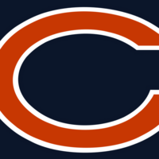
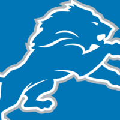
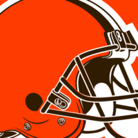
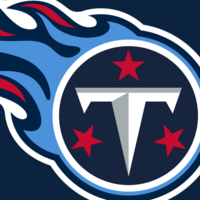
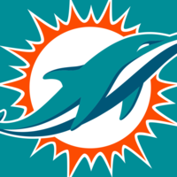
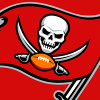
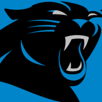

Eliminator picks
Week 4
25-entry single eliminationsingle elimination
Board: 2 teams at 75%+, then 75%. Spreading further would lower P(at least one survives). If MIA wins, 4 entries go out together.
What the survival number means
Chance that one of 6 entries wins 15 straight, from simulated seasons in which the pool is spread each week across the best few teams still available to it, in fixed proportions (most entries on the best, some on the second and third), at the lines at the time. Each entry survives 3.46% on average; if they were independent that would be 19.0%, but they share teams, so 16.4%.
This week's options
CIN LA HOU PIT PHI IND BUF DET DEN SEA GB BAL DAL NE
CIN LA HOU PIT PHI IND BUF MIN DEN SEA GB DET DAL NE
CIN LA HOU PIT PHI IND BUF MIN DEN DET GB BAL DAL NE
CIN LA HOU PIT NO IND PHI DET DEN SEA GB BAL DAL NE

CHICIN LA HOU PIT PHI IND BUF DET DEN SEA GB BAL DAL NE
CIN LA HOU PIT PHI IND BUF DET DEN SEA ARI BAL DAL NE
CIN LA HOU PIT PHI IND BUF DET DEN SEA GB BAL DAL NE
CIN LA HOU PIT PHI SEA BUF MIN DEN DET GB BAL DAL NE
DAL LA HOU CIN NO IND PHI DET DEN SEA GB BAL BUF NE

DETCIN LA HOU PIT PHI IND BUF MIN DEN SEA GB BAL DAL NE
CIN BAL HOU PIT PHI IND BUF MIN DEN SEA GB DET DAL NE
CIN LA MIN PIT PHI IND BUF DET DEN SEA GB BAL DAL NE
CIN LA HOU PIT PHI IND BUF DET DEN SEA GB BAL DAL NE
DAL LA HOU PIT NO IND PHI DET DEN SEA GB BAL BUF NE
CIN LA HOU PIT PHI IND BUF DET DEN SEA GB BAL DAL NE

CLECIN LA HOU PIT PHI IND BUF DET DEN SEA GB BAL DAL NE
Good to know
- Games with no line yet use inpredictable's betting-market power ratings.
- Week 18: in each simulated season a team whose playoff seed is settled after week 17 is docked 10 points for a bye or 7 for a seed with a wild-card game, and an eliminated team 1, fitted on 2011-2025 closing lines. Right now BUF is the likeliest to be resting (27%).
- How much a posted line can still move is fitted from 818 archived lines (about 2.2 pts one week out).
- Later weeks are not planned as named teams: season odds assume the pool is spread each week across the best few teams still available to it, in fixed proportions, at the lines at the time. Simulated spreads widen as the season goes on, as real ones do, so the later menu is richer than today's board.
- Season odds come from 50,000 simulated seasons, each scored exactly from its lines; differences under about 0.04 points are noise.
- A tie is a loss. Only this week's pick is a recommendation; later weeks re-solve every run.
Week 4 board, all 32 teams
| team | opponent | win prob | spread | source | kickoff | result | QB |
|---|---|---|---|---|---|---|---|
| BAL | vs  TEN | 85% | +11.8 | odds | Sun 10/04 13:00 | ||
| MIN | vs  MIA | 85% | +11.8 | odds | Sun 10/04 16:05 | ||
| SEA | vs LAC | 75% | +7.7 | odds | Sun 10/04 16:25 | ||
| BUF | vs NE | 71% | +6.5 | odds | Sun 10/04 13:00 | ||
| KC | @ LV | 66% | +4.9 | odds | Sun 10/04 16:25 | ||
| GB | @  TB | 63% | +3.9 | odds | Sun 10/04 13:00 | ||
| IND | @ WAS | 62% | +3.4 | odds | Sun 10/04 09:30 | ||
| DET | @  CAR | 62% | +3.4 | odds | Sun 10/04 20:20 | ||
| CHI | vs NYJ | 60% | +3.0 | odds | Sun 10/04 13:00 | ||
| LA | @ PHI | 59% | +2.7 | odds | Sun 10/04 13:00 | ||
| SF | vs DEN | 58% | +2.4 | odds | Sun 10/04 16:25 | ||
| NO | vs ATL | 58% | +2.4 | odds | Mon 10/05 20:15 | ||
| PIT | @ CLE | 57% | +2.1 | odds | Thu 10/01 20:15 | ||
| CIN | vs JAX | 57% | +2.1 | odds | Sun 10/04 13:00 | ||
| HOU | vs DAL | 56% | +1.8 | odds | Sun 10/04 13:00 | ||
| ARI | @ NYG | 51% | +0.3 | odds | Sun 10/04 13:00 | ||
| NYG | vs ARI | 49% | -0.3 | odds | Sun 10/04 13:00 | ||
| DAL | @ HOU | 44% | -1.8 | odds | Sun 10/04 13:00 | ||
| JAX | @ CIN | 43% | -2.1 | odds | Sun 10/04 13:00 | ||
| CLE | vs PIT | 43% | -2.1 | odds | Thu 10/01 20:15 | ||
| DEN | @ SF | 42% | -2.4 | odds | Sun 10/04 16:25 | ||
| ATL | @ NO | 42% | -2.4 | odds | Mon 10/05 20:15 | ||
| PHI | vs LA | 41% | -2.7 | odds | Sun 10/04 13:00 | ||
| NYJ | @ CHI | 40% | -3.0 | odds | Sun 10/04 13:00 | ||
| WAS | vs IND | 38% | -3.4 | odds | Sun 10/04 09:30 | ||
| CAR | vs DET | 38% | -3.4 | odds | Sun 10/04 20:20 | ||
| TB | vs GB | 37% | -3.9 | odds | Sun 10/04 13:00 | ||
| LV | vs KC | 34% | -4.9 | odds | Sun 10/04 16:25 | ||
| NE | @ BUF | 29% | -6.5 | odds | Sun 10/04 13:00 | ||
| LAC | @ SEA | 25% | -7.7 | odds | Sun 10/04 16:25 | ||
| TEN | @ BAL | 15% | -11.8 | odds | Sun 10/04 13:00 | ||
| MIA | @ MIN | 15% | -11.8 | odds | Sun 10/04 16:05 |
Per-entry season plans
| entry | P(season) | w4 | w5 | w6 | w7 | w8 | w9 | w10 | w11 | w12 | w13 | w14 | w15 | w16 | w17 | w18 |
|---|---|---|---|---|---|---|---|---|---|---|---|---|---|---|---|---|
| #1 | eliminated | |||||||||||||||
| #2 | eliminated | |||||||||||||||
| #3 | eliminated | |||||||||||||||
| #4 | 5.7% | MIN | CIN | LA | HOU | PIT | PHI | IND | BUF | DET | DEN | SEA | GB | BAL | DAL | NE |
| #5 | eliminated | |||||||||||||||
| #6 | eliminated | |||||||||||||||
| #7 | eliminated | |||||||||||||||
| #8 | eliminated | |||||||||||||||
| #9 | eliminated | |||||||||||||||
| #10 | 3.0% | MIN | CIN | LA | HOU | PIT | PHI | IND | BUF | DET | DEN | SEA | GB | BAL | DAL | NE |
| #11 | eliminated | |||||||||||||||
| #12 | eliminated | |||||||||||||||
| #13 | eliminated | |||||||||||||||
| #14 | eliminated | |||||||||||||||
| #15 | eliminated | |||||||||||||||
| #16 | eliminated | |||||||||||||||
| #17 | eliminated | |||||||||||||||
| #18 | eliminated | |||||||||||||||
| #19 | 1.9% | MIN | DAL | SF | HOU | CIN | NO | IND | BUF | DET | DEN | SEA | GB | BAL | LA | NE |
| #20 | 3.8% | BAL | DAL | LA | HOU | CIN | NO | IND | PHI | JAX | DEN | SEA | GB | DET | BUF | NE |
| #21 | eliminated | |||||||||||||||
| #22 | eliminated | |||||||||||||||
| #23 | 3.6% | MIN | DAL | LA | HOU | CIN | PHI | IND | KC | ARI | DEN | SEA | GB | BAL | BUF | NE |
| #24 | eliminated | |||||||||||||||
| #25 | 2.8% | BAL | CIN | LA | HOU | PIT | PHI | IND | BUF | MIN | DEN | SEA | GB | DET | DAL | NE |
Picks on file and results
| entry | status | losses | w1 | w2 | w3 |
|---|---|---|---|---|---|
| #1 | out | 3 | LAC ✗ L | ||
| #2 | out | 3 | LAC ✗ L | ||
| #3 | out | 3 | LAC ✗ L | ||
| #4 | alive | 0 | JAX ✓ W | SF ✓ W | KC ✓ W |
| #5 | out | 3 | LAC ✗ L | ||
| #6 | out | 1 | JAX ✓ W | SF ✓ W | SEA ✗ L |
| #7 | out | 2 | JAX ✓ W | TB ✗ L | |
| #8 | out | 2 | JAX ✓ W | TB ✗ L | |
| #9 | out | 2 | PIT ✓ W | TB ✗ L | |
| #10 | alive | 0 | JAX ✓ W | SF ✓ W | KC ✓ W |
| #11 | out | 3 | LAC ✗ L | ||
| #12 | out | 3 | LAC ✗ L | ||
| #13 | out | 3 | LAC ✗ L | ||
| #14 | out | 1 | PIT ✓ W | SF ✓ W | SEA ✗ L |
| #15 | out | 3 | LAC ✗ L | ||
| #16 | out | 2 | JAX ✓ W | LAC ✗ L | |
| #17 | out | 3 | LAC ✗ L | ||
| #18 | out | 1 | JAX ✓ W | SF ✓ W | SEA ✗ L |
| #19 | alive | 0 | JAX ✓ W | PHI ✓ W | KC ✓ W |
| #20 | alive | 0 | PIT ✓ W | SF ✓ W | KC ✓ W |
| #21 | out | 3 | LAC ✗ L | ||
| #22 | out | 2 | PIT ✓ W | TB ✗ L | |
| #23 | alive | 0 | JAX ✓ W | SF ✓ W | DET ✓ W |
| #24 | out | 3 | LAC ✗ L | ||
| #25 | alive | 0 | JAX ✓ W | SF ✓ W | KC ✓ W |
Earlier recommendations this week (5)
- Tue Sep 29, 06:52 ET: MIN x4, BAL x2
- Tue Sep 29, 09:16 ET: MIN x4, BAL x2
- Tue Sep 29, 11:02 ET: MIN x4, BAL x2
- Tue Sep 29, 12:37 ET: MIN x4, BAL x2
- Tue Sep 29, 14:13 ET: MIN x4, BAL x2
single entry, two strikestwo strikes
MIN's best spot all season; next best is 71% (wk 16 vs WAS). From the betting odds: MIN favoured by 11.8 at home.
What the survival number means
Chance of no losses in 15 picks, from simulated seasons in which the entry takes the best team still available each later week.
This week's options
DAL LA HOU CIN DET IND PHI JAX DEN SEA GB BAL BUF NE
CIN LA HOU PIT PHI IND BUF JAX DEN SEA GB DET DAL NE
CIN LA HOU PIT PHI IND BUF JAX DEN DET GB BAL DAL NE
CIN LA HOU PIT DET IND PHI JAX DEN SEA GB BAL DAL NE
DAL LA HOU CIN DET IND PHI JAX DEN SEA GB BAL BUF NE
DAL LA HOU CIN DET IND PHI JAX DEN SEA ARI BAL BUF NE
CIN LA HOU PIT PHI SEA BUF JAX DEN DET GB BAL DAL NE
DAL LA HOU CIN DET IND PHI JAX DEN SEA GB BAL BUF NE
DAL LA HOU CIN DET IND PHI JAX DEN SEA GB BAL BUF NE
CIN LA HOU PIT PHI IND BUF JAX DEN SEA GB BAL DAL NE
CIN BAL HOU PIT PHI IND BUF JAX DEN SEA GB DET DAL NE
DAL LA MIN CIN DET IND PHI JAX DEN SEA GB BAL BUF NE
DAL LA HOU CIN DET IND PHI JAX DEN SEA GB BAL BUF NE
DAL LA HOU PIT DET IND PHI JAX DEN SEA GB BAL BUF NE
DAL LA HOU CIN DET IND PHI JAX DEN SEA GB BAL BUF NE
DAL LA HOU CIN DET IND PHI JAX DEN SEA GB BAL BUF NE
Good to know
- Games with no line yet use inpredictable's betting-market power ratings.
- Week 18: in each simulated season a team whose playoff seed is settled after week 17 is docked 10 points for a bye or 7 for a seed with a wild-card game, and an eliminated team 1, fitted on 2011-2025 closing lines. Right now BUF is the likeliest to be resting (27%).
- How much a posted line can still move is fitted from 818 archived lines (about 2.2 pts one week out).
- Later weeks are not planned as named teams: season odds assume the entry takes the best team still available each week at the line at the time. Simulated spreads widen as the season goes on, as real ones do, so the later menu is richer than today's board.
- Season odds come from 50,000 simulated seasons, each scored exactly from its lines; differences under about 0.04 points are noise.
- A tie is a loss. Only this week's pick is a recommendation; later weeks re-solve every run.
Week 4 board, all 32 teams
| team | opponent | win prob | spread | source | kickoff | result | QB |
|---|---|---|---|---|---|---|---|
| BAL | vs TEN | 85% | +11.8 | odds | Sun 10/04 13:00 | ||
| MIN | vs MIA | 85% | +11.8 | odds | Sun 10/04 16:05 | ||
| SEA | vs LAC | 75% | +7.7 | odds | Sun 10/04 16:25 | ||
| BUF | vs NE | 71% | +6.5 | odds | Sun 10/04 13:00 | ||
| KC | @ LV | 66% | +4.9 | odds | Sun 10/04 16:25 | ||
| GB | @ TB | 63% | +3.9 | odds | Sun 10/04 13:00 | ||
| IND | @ WAS | 62% | +3.4 | odds | Sun 10/04 09:30 | ||
| DET | @ CAR | 62% | +3.4 | odds | Sun 10/04 20:20 | ||
| CHI | vs NYJ | 60% | +3.0 | odds | Sun 10/04 13:00 | ||
| LA | @ PHI | 59% | +2.7 | odds | Sun 10/04 13:00 | ||
| SF | vs DEN | 58% | +2.4 | odds | Sun 10/04 16:25 | ||
| NO | vs ATL | 58% | +2.4 | odds | Mon 10/05 20:15 | ||
| PIT | @ CLE | 57% | +2.1 | odds | Thu 10/01 20:15 | ||
| CIN | vs JAX | 57% | +2.1 | odds | Sun 10/04 13:00 | ||
| HOU | vs DAL | 56% | +1.8 | odds | Sun 10/04 13:00 | ||
| ARI | @ NYG | 51% | +0.3 | odds | Sun 10/04 13:00 | ||
| NYG | vs ARI | 49% | -0.3 | odds | Sun 10/04 13:00 | ||
| DAL | @ HOU | 44% | -1.8 | odds | Sun 10/04 13:00 | ||
| JAX | @ CIN | 43% | -2.1 | odds | Sun 10/04 13:00 | ||
| CLE | vs PIT | 43% | -2.1 | odds | Thu 10/01 20:15 | ||
| DEN | @ SF | 42% | -2.4 | odds | Sun 10/04 16:25 | ||
| ATL | @ NO | 42% | -2.4 | odds | Mon 10/05 20:15 | ||
| PHI | vs LA | 41% | -2.7 | odds | Sun 10/04 13:00 | ||
| NYJ | @ CHI | 40% | -3.0 | odds | Sun 10/04 13:00 | ||
| WAS | vs IND | 38% | -3.4 | odds | Sun 10/04 09:30 | ||
| CAR | vs DET | 38% | -3.4 | odds | Sun 10/04 20:20 | ||
| TB | vs GB | 37% | -3.9 | odds | Sun 10/04 13:00 | ||
| LV | vs KC | 34% | -4.9 | odds | Sun 10/04 16:25 | ||
| NE | @ BUF | 29% | -6.5 | odds | Sun 10/04 13:00 | ||
| LAC | @ SEA | 25% | -7.7 | odds | Sun 10/04 16:25 | ||
| TEN | @ BAL | 15% | -11.8 | odds | Sun 10/04 13:00 | ||
| MIA | @ MIN | 15% | -11.8 | odds | Sun 10/04 16:05 |
Per-entry season plans
| entry | P(season) | w4 | w5 | w6 | w7 | w8 | w9 | w10 | w11 | w12 | w13 | w14 | w15 | w16 | w17 | w18 |
|---|---|---|---|---|---|---|---|---|---|---|---|---|---|---|---|---|
| #1 | 6.2% | MIN | DAL | LA | HOU | CIN | DET | IND | PHI | JAX | DEN | SEA | GB | BAL | BUF | NE |
Picks on file and results
| entry | status | losses | w1 | w2 | w3 |
|---|---|---|---|---|---|
| #1 | alive | 1 | LAC ✗ L | SF ✓ W | KC ✓ W |
Earlier recommendations this week (5)
- Tue Sep 29, 06:52 ET: MIN
- Tue Sep 29, 09:16 ET: MIN
- Tue Sep 29, 11:02 ET: MIN
- Tue Sep 29, 12:37 ET: MIN
- Tue Sep 29, 14:13 ET: MIN
Quarterback situations (2)
| team | player | status | injury | penalty | since | return | source | P(out) by week |
|---|---|---|---|---|---|---|---|---|
| CHI | Caleb Williams | out | hamstring | 3.5 | 3 | auto | w4:75% w5:50% w6:30% w7:15% w8:7% | |
| WAS | Jayden Daniels | out | elbow | 3.5 | 3 | auto | w4:75% w5:55% w6:40% w8:25% w9:15% |
Week 18: who is likely to have nothing to play for
| team | bye settled | seed settled | eliminated | avg pts off |
|---|---|---|---|---|
| BUF | 21% | 6% | 2% | 2.5 |
| SF | 10% | 6% | 8% | 1.4 |
| SEA | 8% | 6% | 9% | 1.3 |
| DET | 8% | 5% | 10% | 1.3 |
| KC | 7% | 6% | 8% | 1.1 |
| MIN | 7% | 5% | 12% | 1.1 |
| JAX | 2% | 9% | 12% | 1.0 |
| PHI | 2% | 9% | 22% | 1.0 |
| BAL | 5% | 6% | 10% | 1.0 |
| NO | 0% | 10% | 38% | 1.1 |
| CIN | 3% | 6% | 12% | 0.9 |
| DEN | 2% | 5% | 20% | 0.7 |
Team ratings used for games without a line
| team | points vs avg |
|---|---|
| BUF | +6.5 |
| SEA | +5.6 |
| LA | +5.2 |
| KC | +4.2 |
| SF | +4.1 |
| BAL | +4.0 |
| DET | +3.2 |
| JAX | +3.1 |
| CIN | +3.0 |
| DEN | +3.0 |
| HOU | +1.9 |
| PHI | +1.6 |
| DAL | +1.5 |
| GB | +1.3 |
| MIN | +1.0 |
| NE | +0.8 |
| LAC | +0.2 |
| CHI | -0.9 |
| NO | -1.3 |
| IND | -1.6 |
| PIT | -1.8 |
| CAR | -2.0 |
| ATL | -2.4 |
| LV | -2.4 |
| ARI | -2.5 |
| TB | -2.9 |
| NYJ | -3.4 |
| WAS | -4.4 |
| NYG | -5.3 |
| TEN | -5.6 |
| CLE | -5.8 |
| MIA | -7.5 |